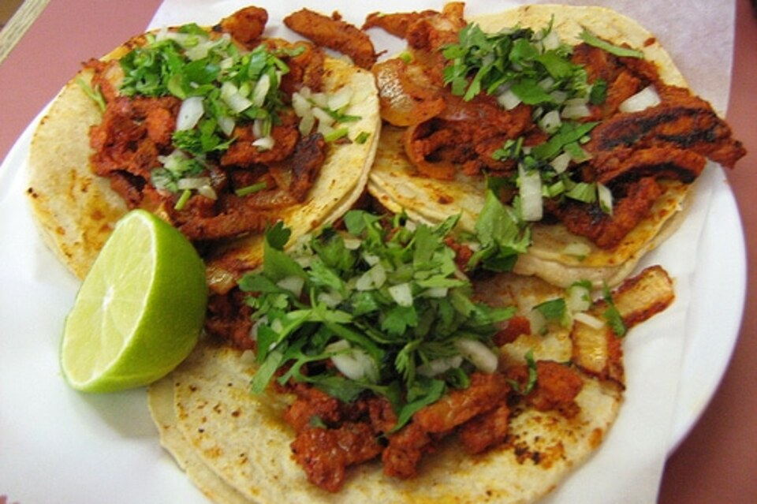
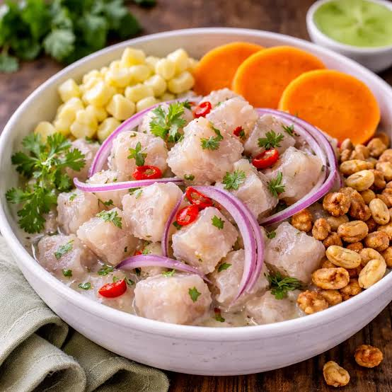
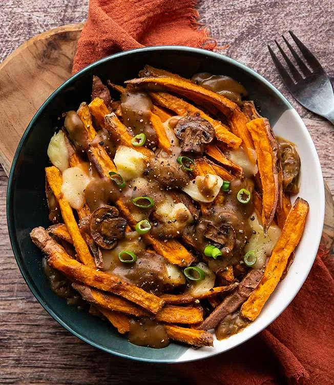

Los tacos al pastor nacieron en la Ciudad de México a mediados del siglo XX, cuando los inmigrantes libaneses llevaron la técnica del shawarma y la adaptaron con ingredientes locales. La carne de cerdo se marina en una mezcla de chiles guajillo, achiote, especias y vinagre, y se apila en un trompo vertical que gira frente al fuego. Se sirve en tortillas de maíz pequeñas con un trozo de piña que cae directamente del trompo, además de cilantro, cebolla y salsa. El resultado combina lo ahumado, lo ácido y lo dulce en un solo bocado.

El ceviche es el platillo emblemático de la costa peruana y forma parte de su identidad cultural. Se prepara con pescado fresco cortado en cubos, que se “cuece” en pocos minutos con jugo de limón, y se sazona con ají, cebolla morada, cilantro y sal. Se sirve muy frío, acompañado tradicionalmente de camote, choclo (maíz grande) y lechuga. El líquido que queda en el plato, conocido como “leche de tigre”, suele beberse aparte por su sabor intenso y refrescante.

La poutine surgió en la provincia de Quebec a finales de los años cincuenta y hoy es uno de los platillos más representativos de Canadá. Consiste en papas fritas recién hechas, cubiertas con queso fresco en grano y bañadas con una salsa caliente de carne llamada gravy. El calor de la salsa derrite ligeramente el queso, que mantiene un característico sonido chirriante al morderlo. Es una comida abundante y reconfortante, ideal para los climas fríos, y se encuentra desde puestos callejeros hasta restaurantes elegantes con versiones gourmet.